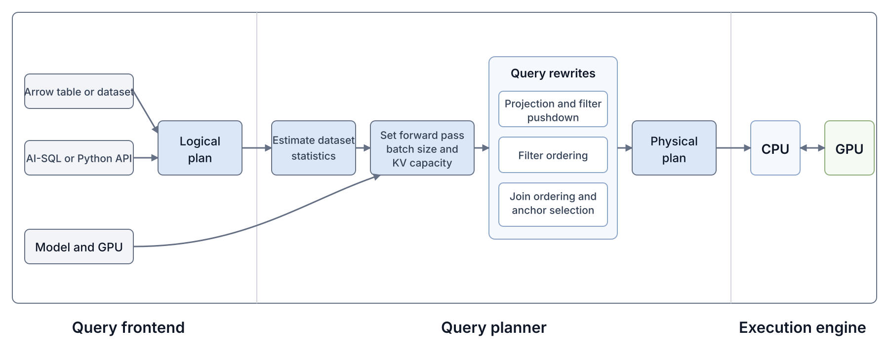

For decades, database users have struggled to analyze unstructured text at scale. SQL, our good old language, and corresponding relational database systems weren’t really great for this. But now, thanks to LLMs, database users can finally unlock insights from unstructured text columns. Major database vendors now support AI-SQL, including Snowflake Cortex AISQL, BigQuery AI functions, and Databricks AI Functions. AI-SQL extends SQL with AI-powered operators, such as filters, joins, and classifiers.
In an AI-powered operator, the user simply specifies what they want in natural language, and LLMs are used to evaluate that instruction over the relevant data. For example, imagine that a database user has one table of medical reports, and another table of possible adverse reactions.1 The user wants to identify which reactions each report attributes to the patient, but only for reports that describe female patients. They might run the following AI-SQL query (which we refer to as BIO-3 in the benchmark we are building):
SELECT r.id, m.id
FROM reports AS r
JOIN reaction_terms AS m
ON AI.IF(PROMPT(
'Does the medical report in {0} describe the reaction in {1} as something the patient experienced?',
r.report,
m.term
))
WHERE AI.IF(PROMPT(
'Does {0} describe a case involving a female patient?',
r.report
));At a high level, the database compiles the aforementioned query into a plan that invokes an LLM on each row for the filter, then makes another LLM call on each pair of rows in the join. Query execution can therefore be incredibly costly, because a filter over \(N\) rows requires \(N\) LLM calls, while a naive join between tables \(A\) and \(B\), with \(n_A\) and \(n_B\) rows, requires \(n_A n_B\) LLM calls.
The database community has proposed a number of logical optimizations that reduce the number of LLM calls, for example, by pushing filters below joins, reordering predicates, choosing cheaper implementations, or pruning candidate pairs [1] [2] [3] [4] [5]. But still, the resulting query plans can end up needing hundreds of thousands, or even millions, of LLM calls.
Executing the query with vLLM. Let us use vLLM to execute the example query plan.
Figure 1. To execute BIO-3, the vLLM baseline can run the report filter before the join, and uses each surviving report as the join anchor.
To execute the plan with vLLM, we’d render one prompt for each report in the filter, and one prompt for each report and reaction pair in the join. We’d submit every prompt as a separate inference request. A simple rendering strategy is to place the document text at the beginning of each prompt, followed by the natural language instruction in the AI-SQL operator. For a filter, there is only one document. For a join, we need to choose which document comes first, which we call the anchor, and which document comes second, which we call the partner. For our query, we place the much longer medical report first, to maximize the number of prefix tokens whose key and value state, called KV, can be reused across join prompts.
Now, each request asks for only a TRUE or
FALSE answer, so the model does not need a separate decode
step after processing the prompt. So the engine should always have
enough work to keep the GPU fully occupied (i.e., be compute-bound). We
set a very large max_num_batch_tokens (>25k) and max_num_seq (4096)
such that the GPU will always be busy. We’ll run Qwen3 4B FP8, with BF16
KV, on one H100, and our query will cover 500 medical reports, averaging
4,066 tokens each, and 1,127 reaction terms, averaging 4.8 tokens each.
Surprisingly, we find two sources of inefficiency in the vLLM
baseline.
The filter has 55 percent selectivity, so it rejects 45 percent of the reports. KV for the rejected reports will never be used again in this query. However, vLLM does not use the filter results when managing KV. It stores KV from every filter request, and evicts the least recently used blocks when the cache fills. As a result, vLLM may keep KV for a rejected report, while evicting KV for a report that will be used in the join. The evicted report prefix must then be computed again during the join. We call any prefix token that the engine recomputes after the same token prefix was computed earlier in the query KV regret. Our vLLM implementation incurs 1.08 million KV regret tokens on this query! Then, during the join, vLLM also stores KV for the entire prompt, even though later requests reuse only the report prefix. The additional waste is small here, because the reaction terms are short, but it could be much larger if both tables contained long documents.
The join submits hundreds of thousands of report and reaction pairs to vLLM as separate requests. The profiler trace below shows five seconds of GPU and CPU activity during the BIO-3 join.

Figure 2. Five seconds of the BIO-3 join with vLLM. The top panel shows when the GPU is active or idle. The lower panel shows recorded CPU operations on the same time axis. Each rectangle is one CPU operation, and its width is the operation’s duration. Nested operations appear below the operation that called them. Orange rectangles are vLLM scheduler operations, and blue rectangles are PyTorch or CUDA API calls from the CPU. Gray intervals have no recorded CPU operation, but they do not necessarily mean that the CPU is idle.
More than 99 percent of the prompt tokens come from the prefix cache, so each batch contains very little model computation. The GPU finishes each batch quickly, but the CPU still has to process and schedule every request in the next batch. When the CPU does not prepare the next batch in time, the GPU sits idle, even though hundreds of thousands of pairs are waiting. The GPU may also use its arithmetic units poorly while a batch is running, which is known as low model FLOPs utilization, or MFU. We do not address low MFU here. Modal provides useful background on GPU utilization and host overhead.
We can compare vLLM’s measured latency with a speed of light estimate for the same query plan. Although we don’t go into the full calculation in this post, we use a roofline model to estimate the time for each model operation. The roofline model takes the larger of an operation’s arithmetic time and the time required to move its data through GPU high bandwidth memory, or HBM. We then combine these operation level estimates according to the query plan. We assume that CPU and GPU work overlap, so the GPU never sits idle. We also assume that every model operation reaches the relevant peak hardware rate, and that the engine retains all reusable KV. Of course, no implementation can satisfy all of these assumptions in practice, so the estimate is an intentionally optimistic lower bound. The implementation in Quail contains the full calculation.
For BIO-3, vLLM computes 14 percent of its input tokens more than once, because it evicted their KV. The vLLM run takes almost 12 times the speed of light estimate. Surely, we can do better!
We are building Quail, an open source query engine for AI-SQL. Quail stands for Query Aware Inference Layer. In this post, we describe how Quail works at a high level, and explain how to get started.
Quail consists of a query frontend, a query planner, and an execution engine. Through the frontend, the user provides Arrow tables or datasets, an AI-SQL or Python query, and the model and GPU(s) to use. The frontend creates a logical plan from the query. The query planner orders the filters and joins, and chooses the anchor for each join. It also determines how many tokens each model forward pass should process. The planner then lowers the logical plan into a physical operator plan, which the execution engine runs.
Quail is extensible, and its design is inspired by Apache DataFusion, an open source, extensible analytical query engine. Users can add new query operators, planning rules, execution backends, models, or support for other hardware.
We’ll walk through the components of Quail in the following paragraphs.

Dataset registration. Users begin by creating a
quail.Session and registering each input under a table
name. An input can be an Arrow table, which holds all rows in memory, or
an Arrow dataset, which scans rows in batches.
Query authoring. Users can write AI-SQL, or
construct the same query through Quail’s Python query builder. The
current release supports AI-powered filters and joins, along with
relational limit and projection operations. The Python query builder
provides the same operations through .ai_filter(...),
.ai_join(...), .limit(...), and
.select(...). Users can chain these calls in the same way
they chain pandas operations.
Operator interface. For the remainder of this post,
we use BigQuery’s AI.IF syntax. The same AI.IF
function can define a filter or a join. AI.IF accepts a
prompt, followed by an optional dictionary that provides information to
the planner. The filter and join signatures are:
Filter:
AI.IF(
PROMPT(instruction, document),
{'selectivity': s}
)
Join:
AI.IF(
PROMPT(instruction, left_document, right_document),
{'selectivity': s, 'anchor': table_alias}
)Planning information. selectivity is
the expected fraction of documents or document pairs that will pass.
When selectivity is omitted, Quail executes the predicates
in the order they were written. For a join, the optional
anchor field names the table whose document appears first
in the prompt, so its KV can be reused across pairs. If the anchor field
is not provided, Quail will select it in the query planner.
Model and GPU. Users choose the model and number of GPUs when they create the session. The current release supports Qwen3 4B FP8 and Qwen3 32B FP8 on H100 GPUs. Users can add another model or GPU through Quail’s extension interface.
Query parsing. Quail uses SQLGlot to parse both
Snowflake’s AI_FILTER syntax and BigQuery’s
AI.IF syntax. The parser returns a logical query plan,
which becomes the input to the query planner.
Overview. For BIO-3, we should run the filter before the join, to reduce the number of report and reaction pairs we evaluate. Planning a query with several filters and joins is more difficult. Given the logical query plan, we perform five steps:
Estimating input sizes. We need the row count, average document length, and maximum document length for each dataset. Tokenizing every document before planning would delay the planner, so we tokenize up to 1,024 documents and calculate the average number of tokens per byte. We apply that ratio to the byte length of every document in the column. The planner uses the estimated lengths, while a background CPU thread tokenizes the full document columns.
Choosing the forward pass size. The planner chooses the maximum number of tokens to process in one model forward pass. The limit is the smaller of what fits in temporary activation memory, and what the GPU kernels can index. Processing more tokens per forward pass reduces the number of submissions from the CPU.
Allocating HBM. The model weights remain in HBM, and we reserve temporary activation memory for two forward passes. We allocate the remaining HBM to KV. Within the KV allocation, we leave enough pages for the KV written by two forward passes, because the GPU may run the current forward pass before the CPU has processed the answers from the previous one. Document KV retained for later operators can use the remaining pages.
Pushing down projections and filters. We first push each projection down to its source dataset, so a scan loads only the columns that appear in a prompt or in the final query result. We then push each filter down to its source dataset, so a document that fails a filter does not enter a later join. Figure 4 shows the filter pushdown for BIO-3.
Figure 4. The logical plan from the parser places the report filter above the join. Quail pushes the filter down to the reports dataset, so rejected reports do not enter the join.
Filter rank. In 1993, Hellerstein and Stonebraker showed that expensive predicates over one table can be ordered optimally with a simple rank formula. For each filter \(i\), let \(\sigma_i\) be its provided selectivity, or the fraction of documents expected to pass. Let \(c_i\) be the estimated latency, in seconds, of evaluating the filter on one document. Their rule orders filters by increasing rank:
\[ \rho_i = \frac{c_i}{1 - \sigma_i}. \]
A low rank favors a filter that is cheap, rejects many documents, or both, because running it early prevents more expensive filters from seeing those documents.
Estimating filter cost. For an LLM filter, \(c_i\) depends on the document length, the filter prompt length, the selected model and GPU, the forward pass size, and whether the document KV is already in GPU HBM. We therefore calculate two versions of \(c_i\). The first cost, \(c_i^{\mathrm{first}}\), is the estimated time when filter \(i\) runs first, so the model must process both the document and the filter prompt. The later cost, \(c_i^{\mathrm{later}}\), is the estimated time when another filter has already computed the document KV, so the model processes only the new filter prompt and attends to the cached document.
We calculate both costs with a speed of light estimate. At a high level, we count the fresh tokens, attention pairs, KV tokens written, and KV tokens read. A fresh token is a token that the model must process, rather than a token whose KV is already available. We translate these counts into arithmetic work and HBM traffic for each part of the model. Let \(r\) index the model parts that run one after another. For either cost, the estimated latency is:
\[ \sum_r \max\left( \frac{\mathrm{FLOPs}_{r}}{\mathrm{arithmetic\ throughput}_r}, \frac{\mathrm{bytes}_{r}}{\mathrm{HBM\ bandwidth}} \right). \]
The maximum accounts for whether each part of the model is limited by arithmetic or HBM bandwidth. The sum accounts for the parts that run one after another. The estimate assumes peak hardware throughput and excludes software overhead. For filter ordering, we also assume an “infinite” KV cache, so document KV is never evicted between filters. We will describe the full speed of light model in a follow up post.
Costing a filter order. For an order \(\pi\) over \(m\) filters and \(N\) input documents, the expected cost of the full filter sequence is:
\[ C_{\mathrm{filters}}(\pi) = N\left[ c_{\pi_1}^{\mathrm{first}} + \sum_{k=2}^{m} \left(\prod_{j=1}^{k-1}\sigma_{\pi_j}\right) c_{\pi_k}^{\mathrm{later}} \right]. \]
The product of the preceding selectivities is the expected fraction of documents that reach filter \(\pi_k\).
Choosing the filter order. We try each filter in the first position, because only the first filter pays \(c_i^{\mathrm{first}}\). For each possible first filter, we order the remaining filters by \(c_i^{\mathrm{later}} / (1 - \sigma_i)\). We then use the expected cost equation above to choose the complete order with the lowest estimated time.
Planning decisions. After ordering the filters, we choose the order of the joins and the anchor for each join. The join order determines how many documents reach each later join. The anchor is the document placed first in the prompt, so the anchor choice determines which document KV can be reused across pairs.
Estimating join cost. For a join between inputs \(A\) and \(B\), let \(n_A\) and \(n_B\) be the estimated numbers of documents that reach the join. With \(A\) as the anchor, we account for computing the anchor prefix once for each of the \(n_A\) documents, then evaluating the predicate for all \(n_A n_B\) document pairs. If the document KV for \(A\) is already in HBM, we need to compute only the join prompt tokens that follow the document. Otherwise, we also include the cost of computing the document prefix. We use the same speed of light estimate to convert the total model computation and KV traffic into seconds. We also estimate the reverse direction, with \(B\) as the anchor, because the anchor choice changes which work is paid once per document and which work is paid once per pair.
Estimating the inputs to later joins. Let \(\sigma_{AB}\) be the provided selectivity of the join, or the expected fraction of document pairs that pass. Assuming that pair outcomes are independent, we estimate the surviving documents on each side as:
\[ n_A' = n_A\left(1 - (1 - \sigma_{AB})^{n_B}\right), \qquad n_B' = n_B\left(1 - (1 - \sigma_{AB})^{n_A}\right). \]
We use \(n_A'\) and \(n_B'\) when estimating the costs of later joins. As with filters, we count the model computation and KV traffic for each candidate plan, and use the speed of light model to estimate its execution time. We will describe the full join cost model in a follow up post.
Searching the join plans. We search for the join order and anchor choices with the lowest estimated total execution time. In 1979, Selinger et al. introduced the System R query optimizer, which searches left deep join plans with bottom up dynamic programming. In a left deep plan, each join adds one base dataset to the intermediate result built so far. A bushy plan can instead join two intermediate results.
Figure 5. A left deep plan adds one base dataset to the intermediate result at each join, while a bushy plan can join two intermediate results. Quail searches left deep plans.
Starting with one dataset at a time, the System R algorithm builds plans over two datasets, then three, and so on. It normally keeps only the cheapest partial plan for each subset of datasets. Selinger et al. also retain a more expensive partial plan when it produces rows in an “interesting order”, because that order may reduce the cost of a later join or sort.
Adapting System R for KV. We cannot keep only the cheapest partial plan for each set of datasets, because two plans over the same datasets may retain KV for different anchors. For example, after joining \(A\) and \(B\), one plan may retain \(A\)’s KV, while another retains \(B\)’s. If the next join compares \(A\) with \(C\), only the first plan can reuse \(A\)’s KV. Fortunately, we can adapt System R’s rule for interesting orders, and retain separate partial plans for each anchor whose KV remains available. The chosen plan specifies the join order, the anchor for each join, and which dataset KV the execution engine should retain for a later join. We will describe the full algorithm in an upcoming technical report.
Physical plan. The planner lowers the logical plan
into a graph of physical operators, which specifies how Quail will
execute each part of the query. Packed Filter and
Anchored Join each represent a complete stage of model
calls, rather than one physical operator for every call. The BIO-3 plan
contains the following operators:
Document Input. The two document input
operators provide the tokenized medical reports and reaction terms.Packed Filter. The packed filter
evaluates the report filter, and returns the IDs of reports that
pass.Anchored Join. The anchored join
evaluates the surviving reports against the reaction terms, using each
report as the anchor.Project. The project reads the
requested report and reaction columns for the pairs that returned
TRUE.Other physical operators. A query with several joins
may contain an Exchange, which updates the surviving
document IDs between join groups, or a Recombine, which
uses Arrow Acero to combine the tuple IDs returned by several joins. A
query with a LIMIT also contains a separate
Limit operator. BIO-3 needs none of these operators.
Figure 6. The BIO-3 physical plan appears on the left. On the
right, one CPU worker executes the plan, schedules each
Packed Filter or Anchored Join, and manages KV
for one GPU. The GPU holds one model copy, loaded through vLLM, and one
KV pool. While the GPU runs the current token chunk, the CPU reads the
previous answers and prepares the next chunk. The numbered labels refer
to the corresponding sections in the text. Quail runs one copy of this
CPU and GPU execution path for each GPU.
Running the plan. The physical plan executor runs
each operator after its inputs are available. Packed Filter
and Anchored Join use the scheduling and model execution
loop described below. Relational operators, such as
Project, run on the CPU.
Tokenizing documents. The model reads token IDs,
rather than strings, so Quail tokenizes every document column used by a
Packed Filter or Anchored Join. During
planning, we estimate token lengths from a random sample, while a
background CPU thread tokenizes the full columns. For Qwen models, we
use bpe-qwen. In our measurement over about four million
tokens, it was about seven times faster than the Hugging Face tokenizer.
We store the tokens and requested result columns in memory mapped Arrow
files, so another query can reuse them without reading and tokenizing
the documents again.
Loading the model. Quail calls vLLM’s model loader, and uses the model implementation and kernels that vLLM provides. We load one complete model copy on each selected GPU, rather than splitting one model across several GPUs. Model loading and kernel warmup run while the CPU finishes tokenizing the documents. Operator execution begins after the model and tokenized documents are ready, and a later query in the same process can reuse the loaded model and compiled kernels.
Allocating pages. Each GPU has its own KV manager and KV pool in HBM. When the model starts on a GPU, Quail allocates the KV capacity chosen by the planner as a fixed pool of pages, where each page stores KV for 16 token positions. The KV manager assigns pages to a document when it enters a filter or join, and returns the pages after its KV is no longer needed. Pages used by the current operator cannot be evicted, because the GPU may be reading or writing them.
Rewinding KV. A completed filter or join prompt contains KV for the document and the operator prompt that follows it. If the physical plan will use the document as an anchor later, we rewind its KV to the end of the document and release the pages used only by the operator prompt. If the document has no later use, we release all of its KV.
Choosing which KV to retain. The planner limits how many pages may hold document KV between operators, so retained KV cannot prevent the next model chunk from running. To decide which document prefixes to keep within this limit, we assign each prefix \(d\) the following value:
\[ V(d) = \frac{ P_{\mathrm{reuse}}(a_d) \times C_{\mathrm{recompute}}(d) }{ \mathrm{KVPages}(d) }. \]
Eviction value. \(a_d\) is the input dataset that contains document \(d\), and \(P_{\mathrm{reuse}}(a_d)\) is the probability that the document reaches its next planned use as an anchor. We estimate this probability from the selectivities of the filters and joins that run before that use. \(C_{\mathrm{recompute}}(d)\) is the speed of light estimate, in seconds, for computing the document prefix again. \(\mathrm{KVPages}(d)\) is the number of pages needed to store its KV. Therefore, \(V(d)\) is the expected recomputation time saved per KV page. We evict the prefix with the smallest value, and break ties by evicting the prefix used later. A document that fails a filter has no future use in the query, so we release its pages immediately.
Overlapping CPU and GPU work.
Packed Filter and Anchored Join use the same
execution loop. The CPU builds a token chunk up to the budget chosen by
the planner, subject to the available KV pages, then launches one model
forward pass on the GPU. While the GPU runs the current chunk, the CPU
reads the TRUE or FALSE answers from the
previous chunk, updates the scheduler and KV manager, and prepares the
next chunk. The GPU can therefore begin the next forward pass without
waiting for the CPU, as long as the CPU prepares the next chunk in
time.
Executing filters. A Packed Filter
evaluates all AI predicates on one dataset, in the order chosen by the
planner. The scheduler first adds documents that passed an earlier
predicate, because their KV is already in HBM, then uses the remaining
token budget for documents that have not started. When a document
returns TRUE, the scheduler adds its next predicate to a
later chunk, if another predicate remains. When a document returns
FALSE, the scheduler stops evaluating it and releases its
KV pages. A document that passes the final predicate keeps its KV only
when a later join uses the document as an anchor.
Executing joins. An Anchored Join
evaluates one or more consecutive joins that use the same anchor
dataset. For each anchor document, the scheduler adds as many candidate
pairs as the token budget allows, and keeps the anchor KV in HBM as its
pairs continue across chunks. One chunk can contain candidate pairs for
several anchors, and each pair reads the KV for its own anchor. If
another join uses the same anchor, the scheduler can begin that join
once every pair in the current join has been submitted, and at least one
pair has returned TRUE. If every pair returns
FALSE, the scheduler releases the anchor KV. Otherwise, the
KV remains in HBM until the anchor’s final join has finished.
TODO: Revisit the join batching diagram.
Producing the result. Each
Anchored Join returns the tuple IDs and Boolean answers for
the candidate tuples it evaluated. For a query with one join,
Project reads the requested columns for the tuples that
returned TRUE. For a query with several joins,
Recombine first uses Arrow Acero to combine the passing
tuple IDs.
Reusing existing kernels. Most of Quail’s model forward pass is the same as vLLM’s, and we load the model through vLLM. We use DeepGEMM for the main matrix multiplications, and FlashAttention 3 for attention. Quail changes how join attention is represented. It also fuses several small operations, and computes only the output scores needed for a Boolean answer.
Computing join attention. The new tokens for each tuple must attend to the KV for their anchor, but one chunk may contain several different anchors. We split attention into two parts at every model layer. One FlashAttention 3 call computes causal attention among the new tokens for each tuple, and another computes attention from those tokens into the corresponding anchor KV. We then merge the two outputs. Let \(o_{\mathrm{new}}\) and \(o_{\mathrm{anchor}}\) be the outputs of these two calls, and let \(\ell_{\mathrm{new}}\) and \(\ell_{\mathrm{anchor}}\) be their log sum exp values. The full attention output is:
\[ o = \frac{e^{\ell_{\mathrm{new}}}o_{\mathrm{new}} + e^{\ell_{\mathrm{anchor}}}o_{\mathrm{anchor}}} {e^{\ell_{\mathrm{new}}} + e^{\ell_{\mathrm{anchor}}}}. \]
Merging the attention outputs. The two calls attend to separate parts of the same prompt, so the weighted merge is exactly equal to one softmax attention operation over the full prompt. Hydragen and FlashInfer’s recursive attention use the same decomposition and merge rule.
Reducing kernel launches. We fuse the attention merge with the FP8 quantization required by the following output projection. We also fuse several small operations around normalization, RoPE, activation, and quantization. The join attention path therefore adds one fused kernel around the two FlashAttention 3 calls.
Computing the answer. A standard language model
output head computes one score for every token in the vocabulary.
Filters and joins need only a TRUE or FALSE
answer, so we select the corresponding rows of the output matrix and
compute only those scores.
Data parallel execution. Quail supports one, two, four, or eight H100s in one Modal container, with one model copy and one KV pool on each GPU. For filters, we divide documents across the GPUs based on their token lengths. For joins, we divide anchors across the GPUs and make the other inputs available to each GPU. The CPU combines the filter survivors and join results after each operator.
| Metric | Quail | vLLM baseline |
|---|---|---|
| Query latency, seconds | 89.92 | 510.91 |
| GPU cost per query | $0.09864 | $0.56047 |
| Fresh input tokens | 7,547,348 | 7,875,694 |
| KV regret tokens | 920,895 | 1,081,310 |
| Latency relative to the speed of light estimate, 43.09 seconds | 2.09× | 11.86× |

Figure 7. In these five-second windows, GPU operations cover 4.997 seconds with Quail and 1.892 seconds with vLLM. The CPU calls appear below the GPU timeline. Both runs use an H100 and the same Qwen3 4B FP8 model.
| id | trajectory_id | turn_index | trace |
|---|---|---|---|
trace_42_turn_5 |
trace_42 |
5 | [USER] Fix the failing parser. [ASSISTANT] Tries approach A. [TOOL] The test fails. |
trace_42_turn_10 |
trace_42 |
10 | <complete trace from turn 5> [ASSISTANT] Finds the mistake, and tries approach B. [TOOL] The tests pass. |
SELECT t.id
FROM agent_traces AS t
WHERE AI.IF(
PROMPT(
'Did the agent recover after trying an approach that did not work?\n\n{0}',
t.trace
),
{'selectivity': 0.32}
);| Metric | Quail | vLLM baseline |
|---|---|---|
| Query latency, seconds | 240.49 | 99.15 |
| GPU cost per query | $0.26382 | $0.10877 |
| Fresh input tokens | 17,389,113 | 5,526,889 |
| KV regret tokens | 11,882,610 | 20,386 |
| Latency relative to the speed of light estimate, 47.47 seconds | 5.07× | 2.09× |

Figure 8. AGENT-1 has one filter and no join. GPU operations cover 4.998 seconds with Quail and 4.988 seconds with vLLM in these five-second windows. Both keep the GPU busy, but vLLM computes far fewer fresh tokens by reusing prefixes across snapshots.
import pyarrow as pa
import pyarrow.dataset as ds
from datasets import concatenate_datasets, load_dataset
import quail
imdb = load_dataset(
"stanfordnlp/imdb",
revision="e6281661ce1c48d982bc483cf8a173c1bbeb5d31",
)
all_reviews = concatenate_datasets([
imdb["train"],
imdb["test"],
imdb["unsupervised"],
])
reviews = ds.dataset(pa.table({
"review_id": pa.array(
f"review-{i}" for i in range(len(all_reviews))
),
"review": all_reviews.data.table.column("text"),
}))
# Assuming there is an H100 attached to this Python process.
with quail.Session(
config=quail.EngineConfig(gpus=1, device="h100-sxm"),
compute_provider=quail.InProcessComputeProvider(),
) as session:
session.register(
"reviews",
quail.DocumentProvider.from_dataset(reviews, id_col="review_id"),
)
query = session.sql("""
SELECT r.review_id
FROM reviews AS r
WHERE AI.IF(
PROMPT(
'Does this review discuss the ending of the movie?\n\n{0}',
r.review
),
{'selectivity': 0.25}
)
AND AI.IF(
PROMPT(
'Does the reviewer recommend watching the movie?\n\n{0}',
r.review
),
{'selectivity': 0.5}
)
""", dialect="bq")
print(query.explain())
result = query.run()
table = result.collect()query.explain() prints the logical and physical plans.
The following output keeps only the parts that describe the two filters
and their execution settings.logical:
Project [r.review_id]
SemanticFilter (x2, sels=[0.25, 0.5])
Scan reviews as r [review]
physical:
workers=1 model_copies=1
backend=quail
KV dtype=bf16
chunk_tokens=110376 admission_tokens=362250
order=by_cost
DocumentInput input:r alias=r n_docs=100000 total_tokens=29926924
PackedFilter filter:r alias=r arena_writes=True keep_kv=False
stage {'written_pos': 0, 'question_tokens': 23,
'selectivity': 0.25, 'expected_docs': 100000.0}
stage {'written_pos': 1, 'question_tokens': 21,
'selectivity': 0.5, 'expected_docs': 25000.0}
Project sink columns=['r.review_id']
note: token counts for 'r' are estimated from a 1024 document sampleThe physical plan uses one PackedFilter for both
predicates, and estimates that 25,000 of the 100,000 reviews will reach
the second predicate.
While the query is running, Quail passes the KV for each surviving review directly from the first predicate to the second predicate, rather than finishing the first predicate over the entire dataset and then starting the second.
The chunk budget allows up to 110,376 tokens in each model forward pass on the selected H100.
The admission budget allows up to 362,250 tokens of document KV to reside in GPU HBM at once, and is separate from the number of tokens processed in one forward pass.
keep_kv=False means that Quail releases the document
KV after the second predicate, because no later operator needs
it.
For longer queries, the physical plan also shows KV rewind between filters, survivor KV retention for joins, and each join’s anchor and expected KV reuse.
Use query.explain(verbose=True) to inspect internal
node IDs, port connections, and all planning settings.
The session keeps the model loaded until the with
block ends, so several queries can reuse it.
The complete demo prints the following results at the end of the run:
matching reviews: 16057 of 100000
stage evaluated 100000 reviews, 0.283 passed
stage evaluated 28296 reviews, 0.568 passed
boot_s: 17.47 (cold)
token_wait_s: 0.0
wall_s: 269.57
total_s: 287.04 (boot + query)
fresh_tokens: 32499738
documents/second: 371.0
GPU cost: $0.3149| Execution | Cost calculation | Estimated cost |
|---|---|---|
| Quail | 287.04 H100 seconds at $3.9492 per hour | $0.3149 |
| GPT-5 nano, infinite cache | 32.500M new input × $0.05/M + 8.409M cached input × $0.005/M + 0.2M output × $0.40/M | $1.7470 |
ModalComputeProvider start an H100 function on Modal:session = quail.Session(
compute_provider=quail.ModalComputeProvider(),
)InProcessComputeProvider is the default, so the Modal
path must be selected explicitly.Support more AI-SQL operators.
TRUE or FALSE after processing the
prompt.AI_EXTRACT and
AI_CLASSIFY may generate several output tokens, so we will
need to support decode.Support more models and hardware.
Improve KV and HBM management.
Improve model FLOPs utilization.
Train models for AI-SQL operators.
The example is based on the BioDEX dataset.↩︎
{kind=link}
{kind=link}
{kind=link}